id="js_content" style="">清朝时期，黄河两岸发生了严重的水灾，几十万灾民处境危险。
文武百官向皇帝告急，希望朝廷能够出钱赈灾。
这让皇帝不禁眉头紧锁，因为此时国库空虚，并无闲财。
人命关天，几经斟酌，皇帝还是决定拨款三百万两前往赈灾。
此事关系甚大，朝廷请了威德镖局来护送灾款平安到达灾区。
可就在半路，他们遭到一群强盗伏击，这些人并非常人，个个武功奇高，很快，所有护送灾款的人被全部杀死。
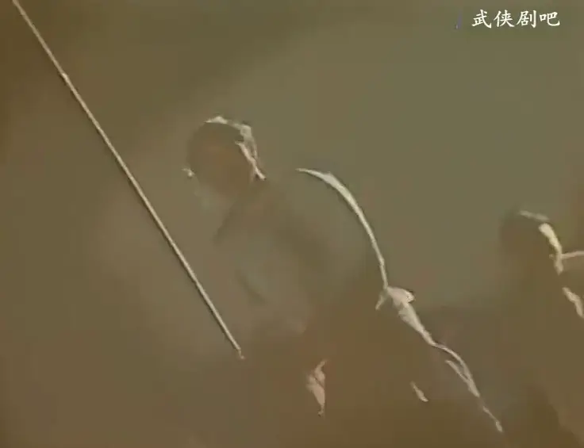
灾款被劫，皇帝龙颜大怒，降旨要彻底清查。
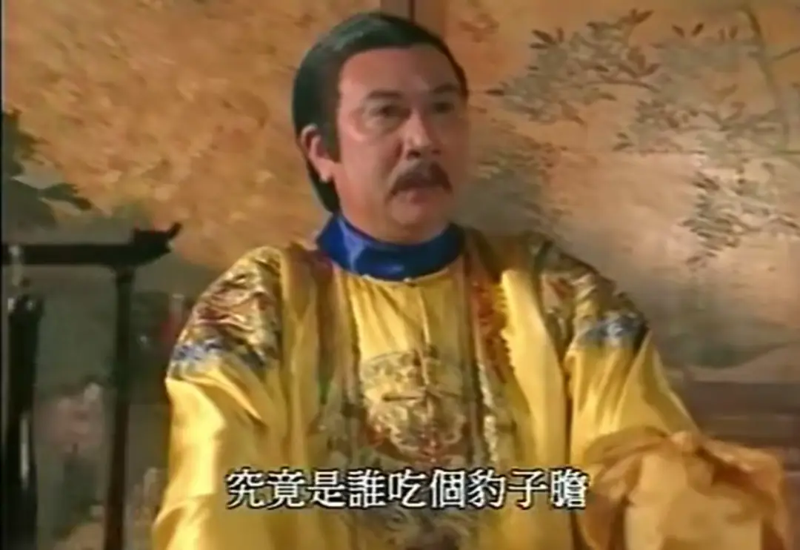
结果，威德镖局上下一百二十三人被砍头，总镖头公孙翔更是被株连九族，一千三百二十二人被全部砍头。
而灾款途经各省的很多官员也被一律降罪处斩。
就这样，黄河大劫案光是被处斩的人就有两万人，而因为没有得到灾款而被饿死的百姓更是高达三十万人。
人间惨剧，莫过于此。
但是黄河大劫案的劫犯却始终没有被抓到。
一时，黄河大劫案成为了最大的悬案。
两年后，江湖中出现一个神秘剑客饿狼。
此人武艺高强，专挑黄河两岸的提督下手，总是一剑穿喉，让人闻风丧胆。
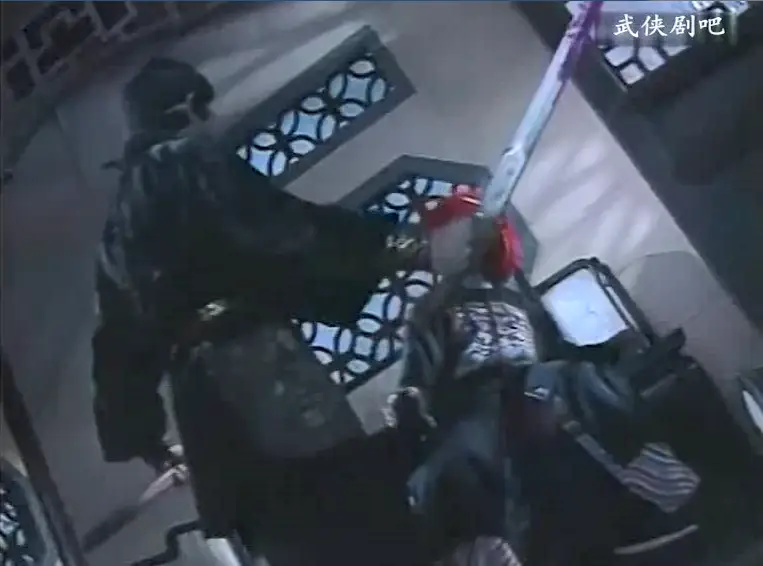
而被杀的提督都是如意公公的亲信，这些官员也都是一些贪赃枉法之辈。
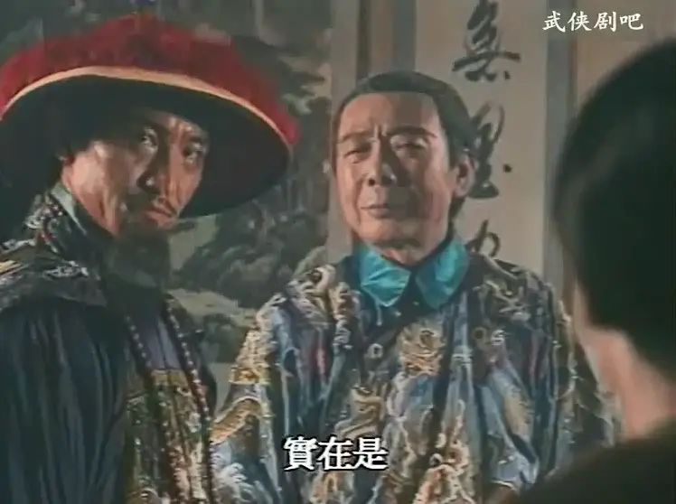
原来，饿狼就是两年前的总镖头公孙翔，他当时晕死过去才逃过一劫。
事后，他千方百计终于查清楚，当时抢劫灾款的正是如意公公这群奸臣。
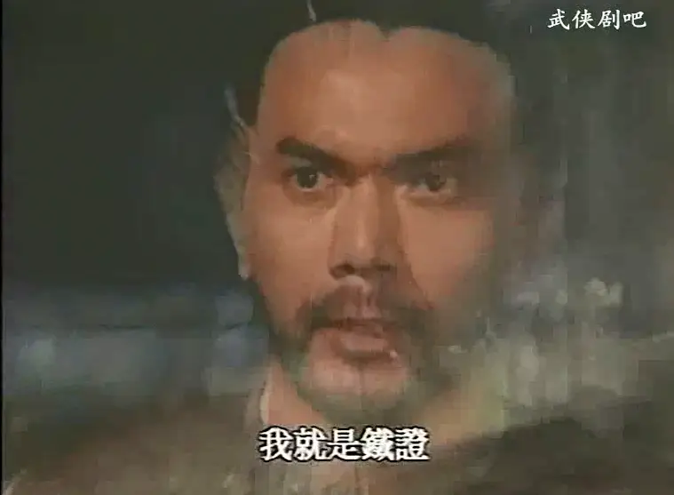
所以，饿狼是官逼民反，在两年的时间里他寻访名师，苦学武功，立志成为一个为民除害的大侠。
“十步杀一人，千里不留痕，引刀成一块，快意了恩仇”，这成为了饿狼的信条。
如意公公为了保全自己的势力，请出天下第一捕快欧阳索来抓捕饿狼。
欧阳索为人正直，他明白当今朝廷黑暗，以前自己辛辛苦苦抓回来的罪犯，第二天就被人贿赂释放。
尽管如此，欧阳索依旧坚信国家律法，只有将不守法的人绳之于法，这个国家就不会乱。
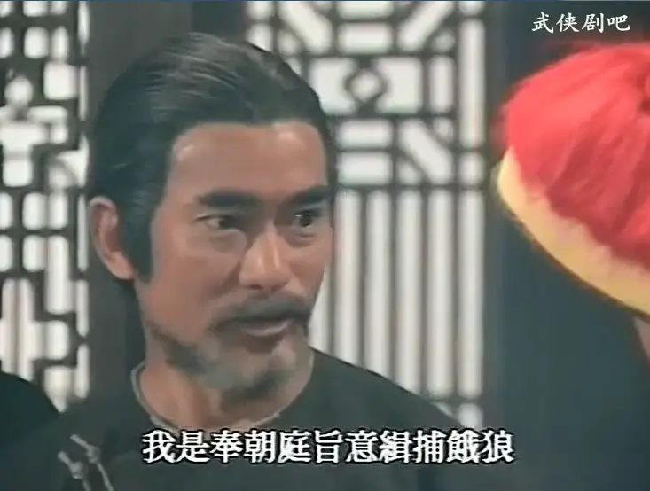
小捕快关无过立志要成为神捕第二，决心跟随欧阳索破此大案。
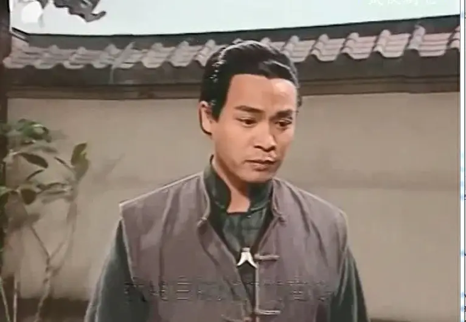
就这样，摆在年轻人关无过的眼前，一条是快意恩仇的饿狼，一条是坚守国家律法的欧阳索，他该如何选择？
真相与正义，国家与私利，当你穿行其中的时候，你到底是否清楚自己在做什么......
这是我多年以前看到过的一部剧，这部剧是1996年的香港武侠剧《千秋英烈传》。
“英烈”而非“英雄”，讲的是一些非常悲壮的故事，该剧由八个春秋战国至清末民初的独立故事组成。
我剪出了一部分让大家回忆一下
画质再渣
也挡不住那个时代的演技
▼
我今天介绍的这部是其中最出彩的一部，名叫《江湖》。
记得小时候看的时候，这部就让我产生很多思考，如果我是关无过，我将如何选择。
做一个脱离体制的大侠，还是做一个深入虎穴、苦苦坚持的官员？
最近我知道一些人遭遇了类似的事情，让我不禁又想到了这部剧，所以又重温了一遍。
再次看完后，发现这是一部非常思辨、非常有意思的剧，是一部关于良心泛，关于人命和国运、真相与谎言的作品。
这部短剧刚开始便向观众抛出一个有意思的问题。
关无过在和自己的师傅下棋，两人闲聊，关无过向师傅表达自己将来一定会成为一个出色的捕快。
师傅撸一撸胡子，笑着和他说“兵和贼有时也只是一线之差，只是观点与角度不同，如果有一天你要抓的贼是你的师傅，你会用我教你的武功来对付我么”
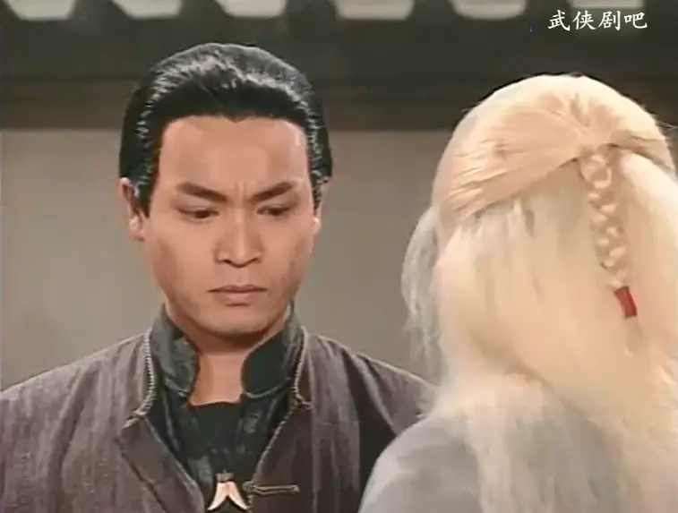
关无过若有所思，但接着说怎么可能呢，如果真是这样，我想我还是会动手的。
紧接着，电影借着这个满腔热血的小伙子的视角，带我们走进了这样一个困局。
当关无过跟着欧阳索办案，亲眼见证了官场政治的黑暗和腐败，知道了饿狼和黄河大劫案的悲惨后，他动摇了。
这个良心的拷问对于欧阳索自己来说也是一样，他也深深地明白“捉贼的不一定是兵，而被兵抓的就不一定是贼”。
所以，他的原则是既然深受朝廷的俸禄，那就要替朝廷办事，凡事做到尽力，问心无愧。
面对良心泛，欧阳索会将枪口抬高一公分，但他也绝不赞同凡事可以靠武力来解决，他坚信只有依法治国才是长远之计。
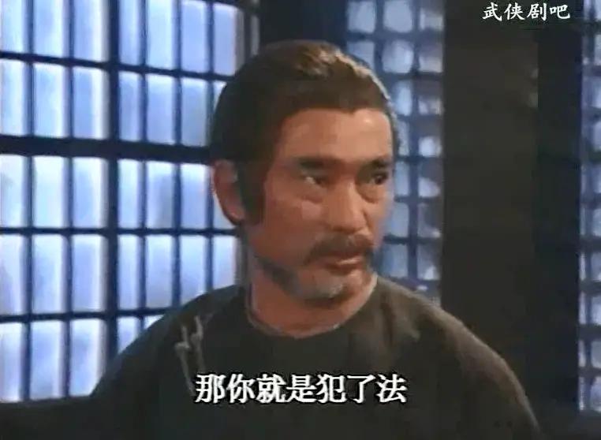
欧阳索的看法，在饿狼看来是某种程度的自欺欺人，他认为大清的律法是非常荒谬的，这些律法只是用来保护朝廷，而非用来保护人民的。
如果凡事都依照规矩而做，那就会被绑死而了无新意。
尽管两人方向不同，他们都有一颗侠义之心，所以两人彼此尊重互为知己。
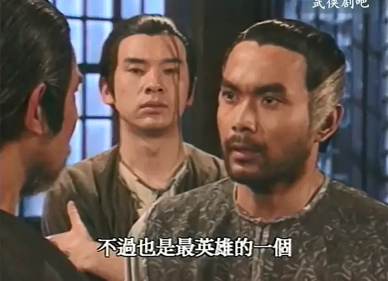
所以，当关无过赌气离开欧阳索的时候，他问饿狼什么是江湖人。
饿狼告诉他“心未死，血是热的人，即是江湖人”。
言外之意，坚持真相和正义的血性之人都是江湖人。
饿狼告诉他，欧阳索可能是官场中最后一个江湖人，他需要你的帮助，并建议关无过留下来帮助他。
最终，三人引为至交，并达成君子协议。
饿狼暂停刺杀行动，和欧阳索等人上京，并向皇帝揭发黄河大劫案的真相。
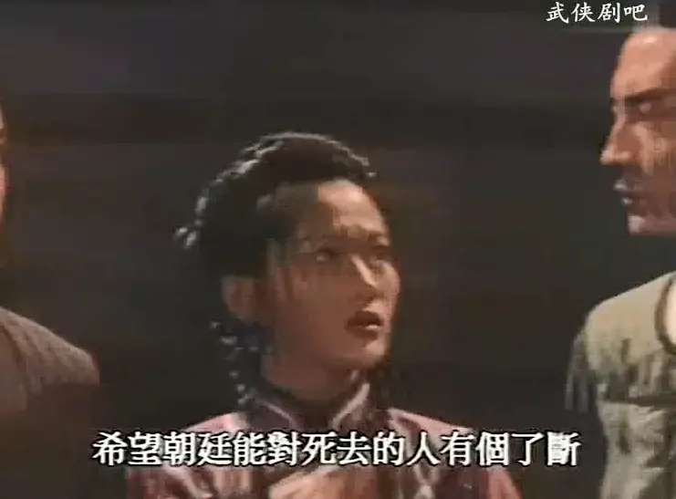
在出发之前，关无过的师傅语重心长地告诉他：
我当年像你一样充满热血，当时也没有人告诉我 ，当你当仁不让地做一件事情时，承担责任的不会只是你一个人，以为杀一个贪官是理所当然。
但是没有想到，我陪上了我一家十九口人的姓名。
师傅不是反对你行侠仗义，师傅希望你清楚，你做的每一件事的背后到底是为什么，一切要从心出发，不要让自己后悔。
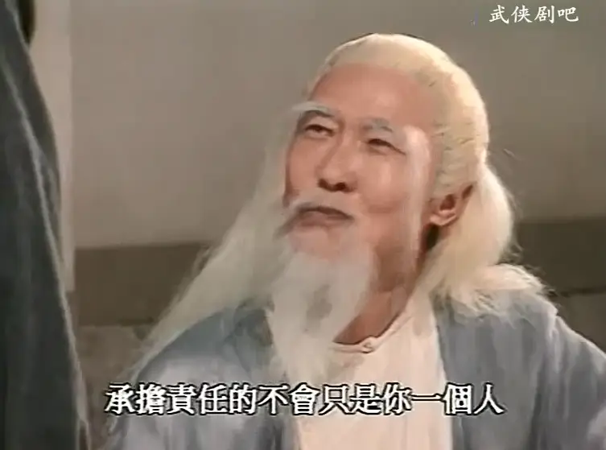
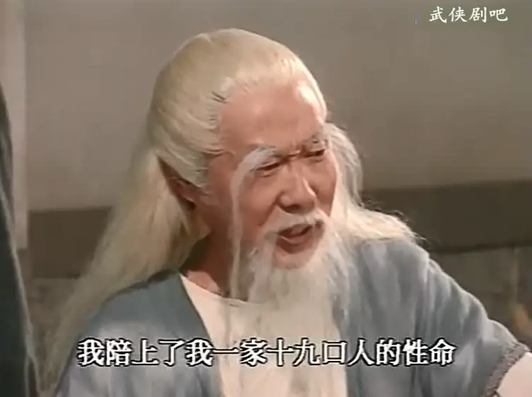
原来，关无过的师傅曾是江湖中名震一时的剑客，曾因杀了一个贪官而家破人亡，所以隐姓埋名躲了起来。
他看着关无过的行动，不免担心他会重蹈覆辙，因为他深深知道，当你落难时，那些口口声声支持你的人最终也会明哲保身。
果然，悲剧发生，回京后，欧阳索遭到陷害，并被斩断手筋脚筋，被冠上莫须有的罪名要被处斩。
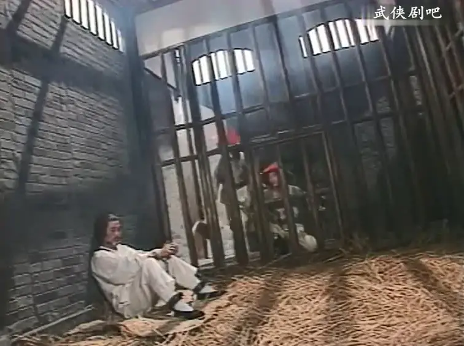
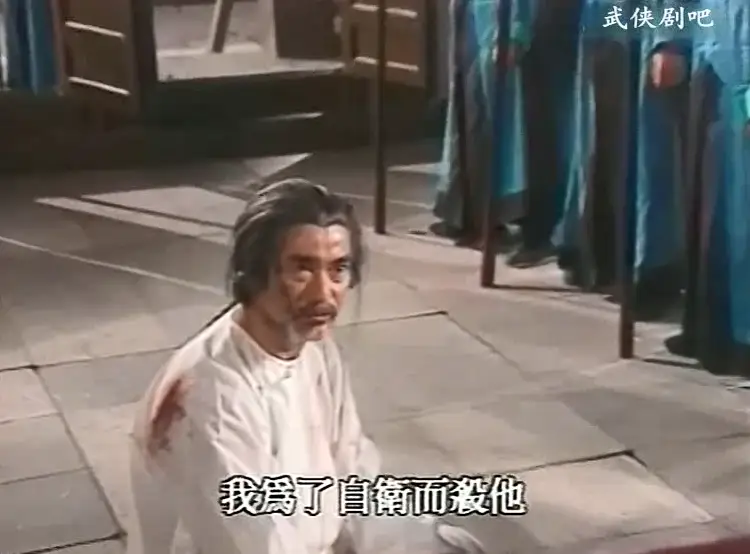
饿狼和关无过拼了性命去劫法场，可欧阳索武功全废，很难冲出重围。
危急之下，欧阳索告诉饿狼是自己错了，请求他们离开，日后为自己伸冤。
可愤世嫉俗的饿狼知音难觅，选择与欧阳索共赴黄泉，这个场景非常悲壮。
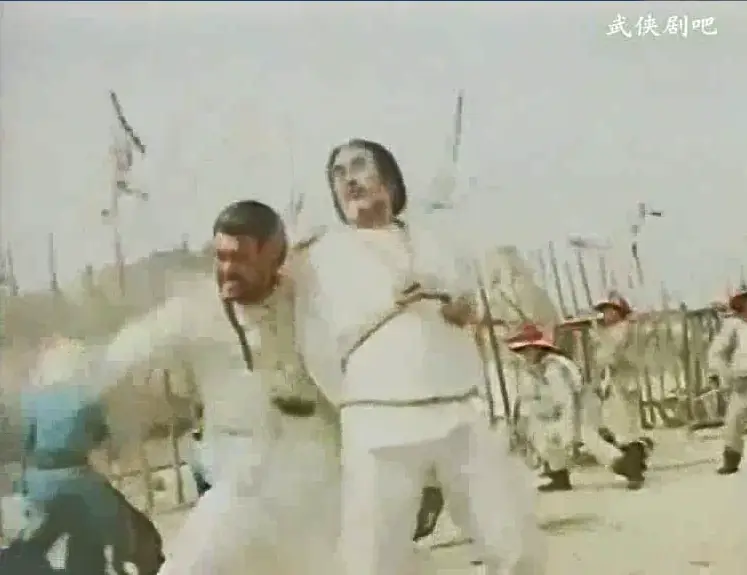
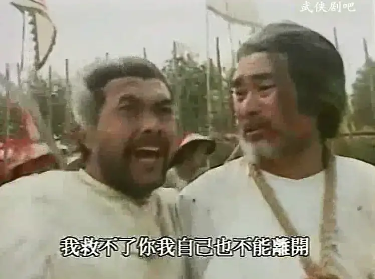
最终，关无过逃离法场，立志要杀掉如意公公为两位前辈报仇。
故事本应按此剧情发展下去，以惩恶扬善。
可电影的结尾给了关无过和观众当头一棒。
当关无过半夜侵入如意公公府邸，用剑指着他的喉咙时，如意公公一看关无过如此年轻，便问他你为何要杀我。
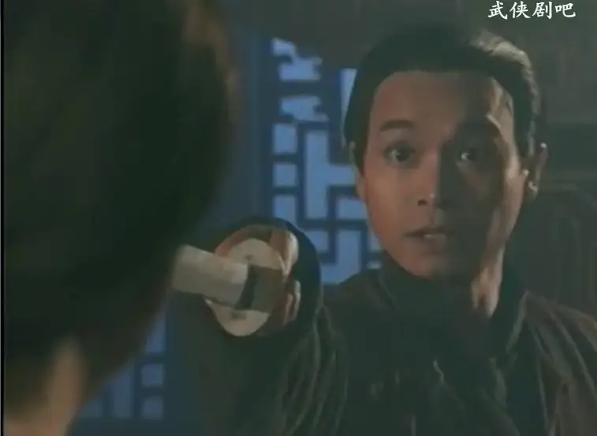
关无过义正言辞地告诉他，为了死去的欧阳索和饿狼报仇。
如意公公却不禁大笑：
“哼，你们这些自命重情重义的江湖中人，实在是太可怜了，尤其是你，年纪轻，你以为还有什么江湖，什么义之所在吗
其实有很多的江湖人，都受朝廷的恩惠和控制，甚至，有些人为朝廷效劳，如果，他们敢反抗朝廷，你说，朝廷还会让他们存在吗
连命也不要，是为死了的人报仇，哼，你以为别人会说你重情重义吗，人家只会笑你傻，笑你天真”
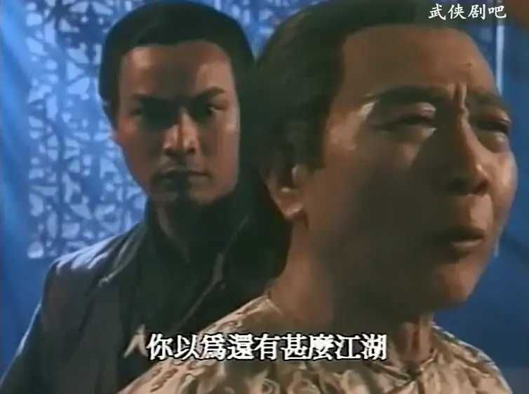
关无过不屑地告诉他“你连赈灾的款都可以抢，就是因为这样，有几十万的人，因为你而死了，难道你一点都不觉得惭愧吗”
紧接着如意公公告诉关无过“为什么我要觉得惭愧啊！其实江湖中人，有很多都跟我一样到处抢掠。”
关无过：“你不可以跟他们相提并论，他们所抢的都是贪官污吏的钱，所劫的都是不法之财，而且得回来的钱财，都是用来救济穷人的。”
如意公公“既然又偷又抢，就有违国法，家有家规，国有国法，既然抢，就一定有罪，不过美其名，称他们为侠道，
凡是去抢的人，一样是贼，无论是江湖上的人也好，你口中的贪官也好，大家同样要生活，同样要活在这个社稷之下，同样受皇上的统治，就要遵守王法。”
如意公公的回答让关无过很生气，他质问如意公公，既然你知道要遵守王法，但你们知法犯法，要定罪，第一个要定的也是你！
如意公公不屑地说“为什么大家不遵守王法，为什么大家要乱来，因为人人都想权势，人人迷恋钱，我们为了仕途，你们为了扬名立功，大家都是一己之私，又有什么分别呢！”
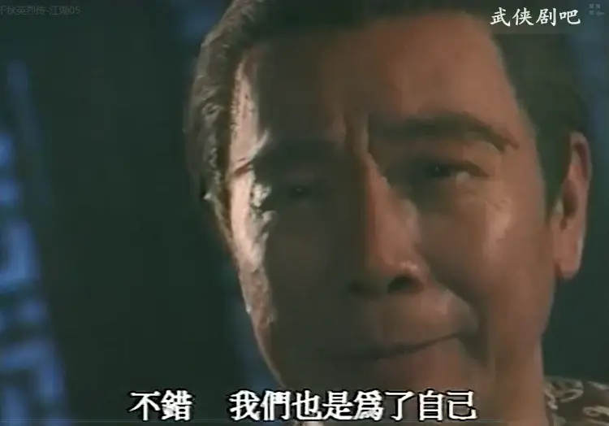
接着，如意公公告诉关无过一个残酷的真相，其实这一切都是皇帝的阴谋，当时黄河发生水灾时，国库非常空虚，如果选择救助人民，那国家将无法运转。
如果不帮，那文武百官会给皇帝施压以达到自己的私利。
所以，当时一个公公给皇帝出了主意，只是拿出两万两，剩下的箱子里装的都是石头，再安排一起劫案来掩人耳目。
这样，皇帝不必承受骂名，人民也不会对朝廷有怨言，社稷可以稳固。
所以，在如意公公看来，是他们这些人承受着骂名，保住了社稷。
在灾款里边他们也得不到一分一毫，他们所得的，就是皇上的封赐，也就是朝廷的权势。
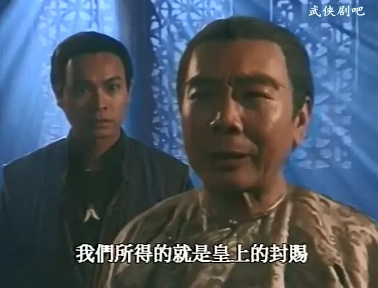
而有了权势，他们可以为国家出力，他们所做的一切，也都是为了国家。
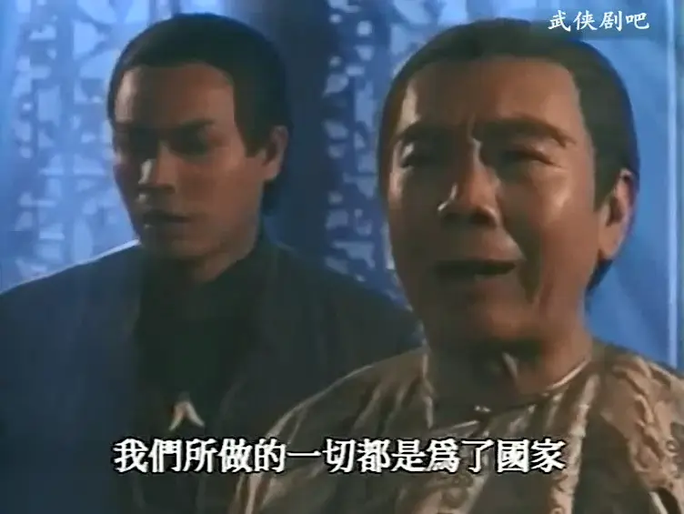
如意公公紧接着质问关无过：
他们从来没向我要求过什么，帮我做了这么多的事，顶了这么多的罪名，请问，你比不比得上他们，你做了这么多事，你又知不知道自己正在做什么呢？
我们这些你眼中的狗奴才，所做的事，都是效忠皇上，起码，我们知道自己为什么而生，为什么而亡，而你呢？
这个真相给关无过当头一棒，在那个时代，皇帝就是天顶，他又如何能逆“天”而行。
他不解地问如意公公，你为什么要把真相告诉我。
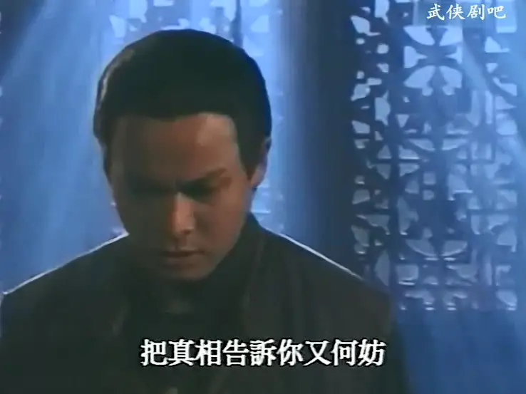
如意公公笑着说“哼，把真相告诉你又何妨？就算你把这件事告诉别人，我看也没有人会相信”.....
电影最后这些对话非常有意思，如意公公和关无过争论的问题今天依旧存在。
首先，尽管如意公公不知廉耻地将自己的私心全部说了出来，但他的确说对了一点。
那就是每个人都存有私心，有人为钱，有人为名。
为钱为利者一般会比较直接，并不会特意回避自己这样低俗的动机。
但是舍身取义者，往往会在道德主义和自我理想的包装下变得很虚伪，不愿意承认自己存有私心，夹带私货。
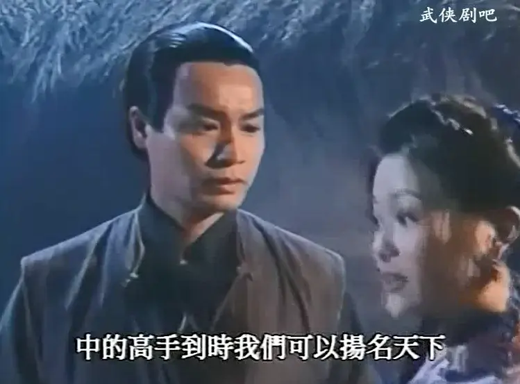
对于这一点，也是中国文化根深蒂固的痼疾，我们总习惯将自己的私心诉诸于国家和道义，所以容易产生伪君子，总是打着国家、民族的名义为自己谋取私利。
所以，我们需要对人性有正确的看法，将期望拉回到正常的预期，不必对任何人尤其是名人抱有过高幻想，承认每个人都是自私的，是自我趋利的。
有了这样的共识基础，我们才可能利用一些机制来分权制衡、互相监督，从强调“不要成为恶者”的道德说教，变为“利用机制无法让别人作恶”的务实做法。
其次，这部剧作戏剧张力的背后是对生命价值的不同看法。
在如意公公看来，大清社稷的稳定是最重要的，这个价值大于30万百姓的生命。
他还用一些未经求证的借口自欺欺人，让自己心安理得，甚至义正言辞。
比如拨出那三百万两真的会让国家停止运转么？文武百官向皇帝告急，真的只是为了给皇帝施压为自己谋私利么？
正是如意公公心底里对生命的漠视，所以他只唯上不唯百姓。
对于饿狼、欧阳索和关无过这些侠义之士来说，他们更看重生命的价值，但是他们对个人生命的看法有天花板。
这个天花板那就是皇权，所以当如意公公将皇帝作为幕后主使搬出来后，关无过选择了妥协和归隐。
到如今，有如意公公、关无过这种想法的人依旧是多数。
要么像如意公公一样以集体名义吃人。
要么像关无过一样年轻时敢于表达，碰壁后就选择清高退让。
这背后缺失的是对个体生命价值的笃定，我们需要一种信仰来让我们认识到生命的价值和尊严。
让我们明白生命的价值高于一切，没有任何一个人或者一个组织可以以一种非正当的方式剥夺另一个人生命的权力。
最后，这部电影对年轻人的义怒和对真相的追求提出了质疑。
这种提醒某种程度上是非常必要的。
年轻人单纯且一腔热血，很容易成为别有用心者的利用对象，所以，年轻人不能过于冲动，需要审慎考虑和寻求更多的信息。
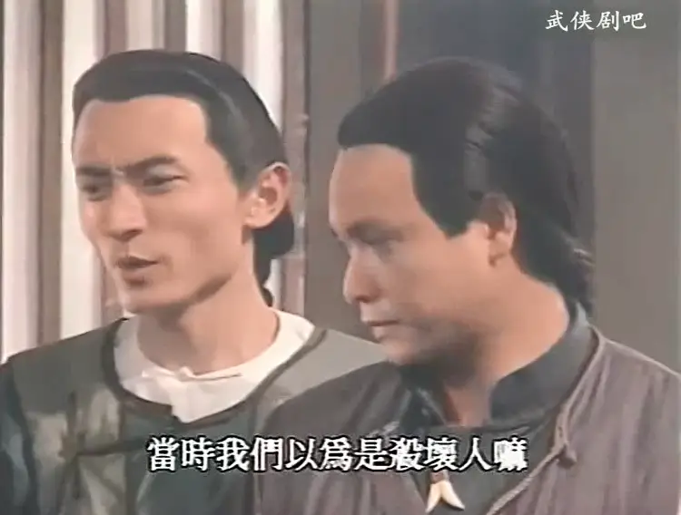
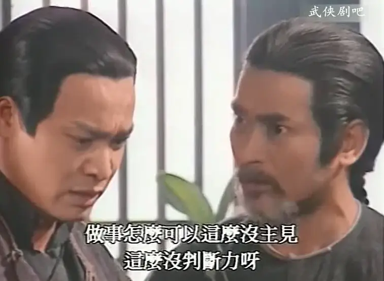
另一方面，这部电影某种程度上否定了真相的存在，认为没有绝对的真相，有的只是不同立场和角度解构后的真相。
如果没有一个终极的真相，如果这个世界只是利弊权衡的结果，那我们将如何面对这个世界。
关无过无法直面这样赤裸的事实，所以只能归隐避世。
而更多人则以一种弱肉强食的心态来谋求生存和发展，但这样会让这个世界变得异常残酷和没有盼望。
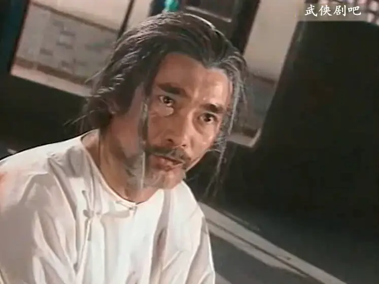
但这部作品中又存在很多让人感动的地方，其中最让人动容的地方是饿狼为知己而死，这是刹那的生命直觉，饿狼知道有些东西超越死亡，超越自己心中未报的仇恨。
即使二人是含冤而死，但我们总觉得他们这种对于正义和友情的坚持直抵穹苍，能够超越有限的时空和不完美的世界。
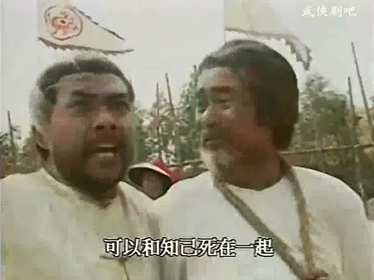
这便是隐秘在破碎现实背后的力量。
这是一种超越现实的力量，会让我们不自觉地对永恒意义里的公义、良善、真相产生盼望。
因此，信望爱是真正的力量之源，真善美是信望爱的产物。
我们的文化里闪耀着对真善美的追求，但对真善美的源头有很多模糊不清的概念，难以形成强大的信仰。
所以很容易短视，良心最终会屈从于权力和物质。
如今，我们需要一种信仰，能够让我们触碰到信望爱的源头，那样才会生出有生命力的真善美。
-END-
这里没有挑逗你眼目情欲的小鲜肉
也没有挑动你肉体情欲的段子
更没有膨胀你今生骄傲的鸡血
我们只在乎那些最质朴真诚的作品
在那里我们才能恢复真正的想象力
我们也坚信这才是我们真正需要的

ID:Six_hundred_hits
长按二维码，一键关注
【六百击】
电影评论
尽情分享朋友圈

微信二维码打赏通道
特别提醒：文中图片来自网络，版权归原作者所有，如有侵权请立即与我们联系,我们将及时删除。